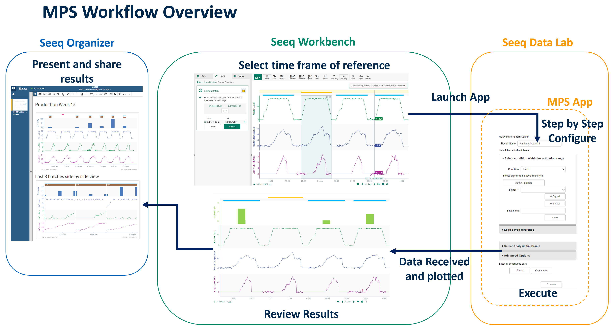
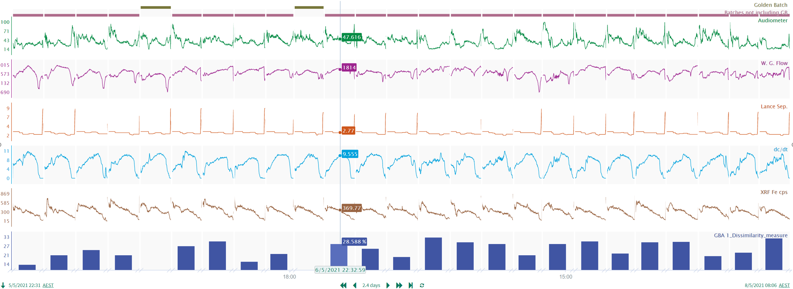
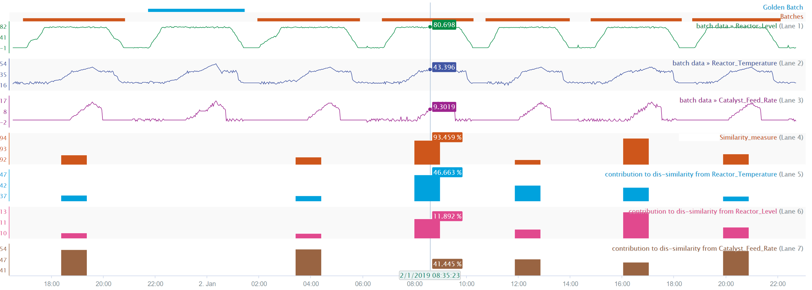
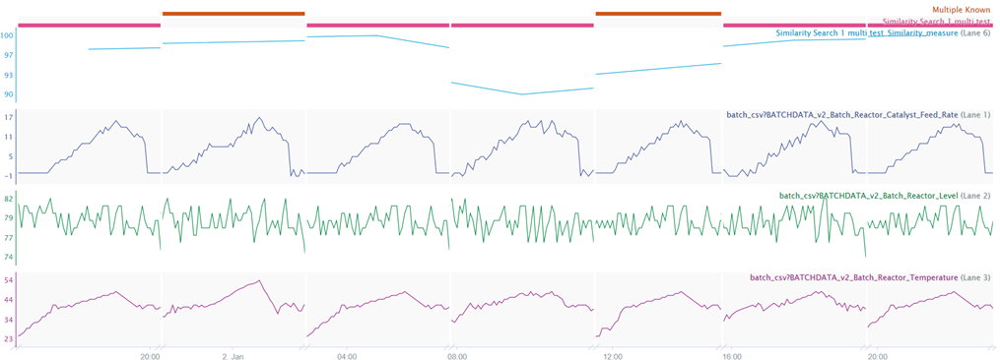
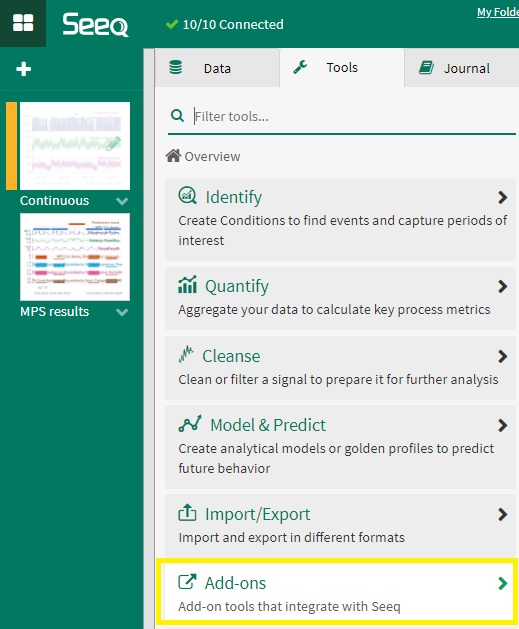
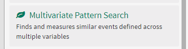
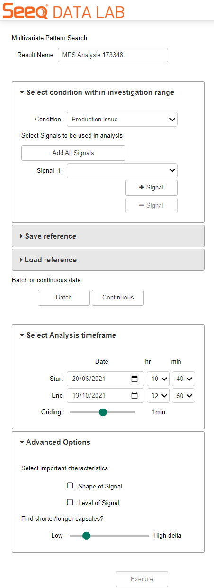

User Guide
|  |
Overview
Seeq’s Multivariate Pattern Search (MPS) Add-on is a user-friendly point-and-click tool to locate and quantify similarity of like process operation from a given reference. The given reference condition can include more than one event (capsules) and events can vary in characteristics. The Add-on utilizes the information from each reference capsule in the analysis. MPS can be run in continuous or batch mode.
|  |
In continuous mode, the Add-on searches across a given time frame for the most similar events to the user-provided reference event(s). The user can define a similarity threshold cut off or set a limit on the number of events returned, for example, it can return the top 10 most similar events found, every event above a 80% similarity measurement, or a combination compared to the given reference(s). The output from this Add-on is a condition with a capsule for each event found meeting the similarity thresholds configured, and a corresponding percentage similarity signal.
In batch mode, the Add-on requires a condition input that describes the batch periods of operational they want to compare to their reference batch(es). The Add-on functions much the same as it does in continuous mode, but does not search for events to compare, it simply measures the similarity between the given batch condition to the reference batch condition. Batch mode outputs a percentage similarity signal corresponding to each capsule in the given batch condition.
Both Add-on modes also output contribution signals that detail the % contribution of each variable (signal) to the overall dissimilarity measured against the reference/s.
|  |
MPS utilizes an ensemble of algorithms to compare all of the available data points of a target event to the reference event. The Add-on has an advanced option that allows custom selection of algorithms for this ensemble to achieve the user’s desired results. It can be constrained to compare every signal data point between events absolutely and based on their fixed temporal positioning. MPS can also be configured to scale target events to relative values and focus on the shape of trends to compare, so that events need not be the same magnitude or same duration of time to be detected. This allows the user to compare important events that may or may not include process delays, volume size differences or even compare different trains/facilities to one another using the same references. The dynamic time warping capabilities gives MPS the ability to effectively take in multiple reference events of diverse durations.
|  |
If the user aims to compare their known reference capsule/s to a different time frame or asset it can be saved and loaded to be applied in another analysis. When the reference is loaded to compare with a different asset the analogous signals are automatically assigned and displayed in the Add-on UI for the user to review and manually assign if required.
How to Use
Mps analysis is launched from within Seeq Workbench tool tab within Add-ons sub-group.
|  |
|  |
Workflow
Open MPS from Seeq’s Add-on menu in the Tools panel
Name the analysis, this will be used to name the output
Select the reference condition
Add the relevant signals of interest to be used in the analysis
(Optional) Save the reference for future use
(Optional) Load reference: To utilise a saved reference to compare to new timeframe or different asset
(Optional) Loaded reference: Review automatically assigned target signals to loaded reference signals
In batch mode: Select batch condition
In Continuous mode: (Optional) Configure the similarity threshold (default is 90%)
In Continuous mode: (Optional) Define the upper limit of found capsule results by all or assign an integer
(Optional) Manually configure timeframe of analysis (investigation range in the workbook used as default)
(Optional) Configure advanced options: Select important signal characteristics (shape and/or level)
(Optional) Configure advanced options: Slider to configure degree of dynamic time warping allowed
Run the analysis by clicking the ‘Execute’ button
Wait for the ‘Execute’ button to turn green
Close Add-on window
Click back to the workbench and refresh the webpage to view the new worksheet created with the MPS results
|  |
MPS Applications
Continuous Processing
Identifying steady state process abnormalities (all verticals)
Identifying highest contribution signals to catastrophic equipment failure events (all verticals)
Identifying the highest contribution signals to long term equipment degradation (all verticals)
Identifying highest contribution signals to quality deviations (all verticals)
Batch Processing
Measure similarity of a given batch to golden batch standard (pharma, chemicals, food & bev, CPG)
Measure similarity of a procedural step to a reference step (pharma, chemicals, food & bev, CPG)